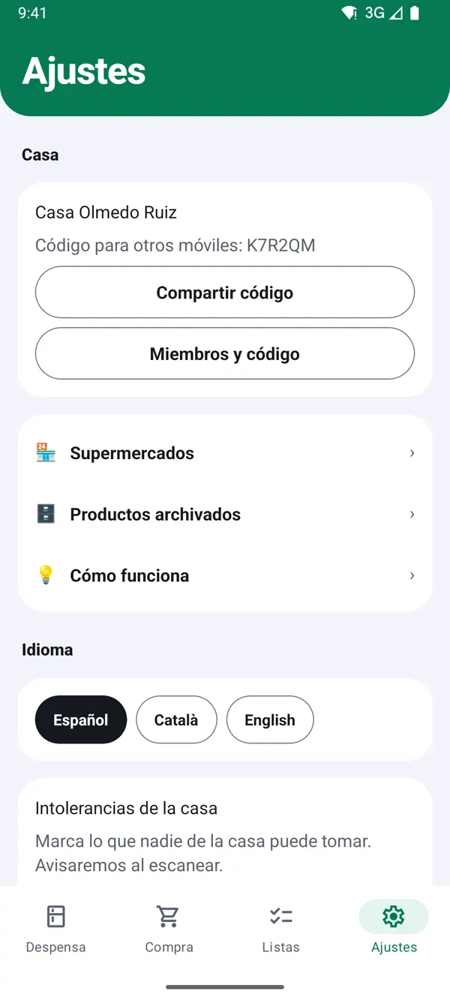
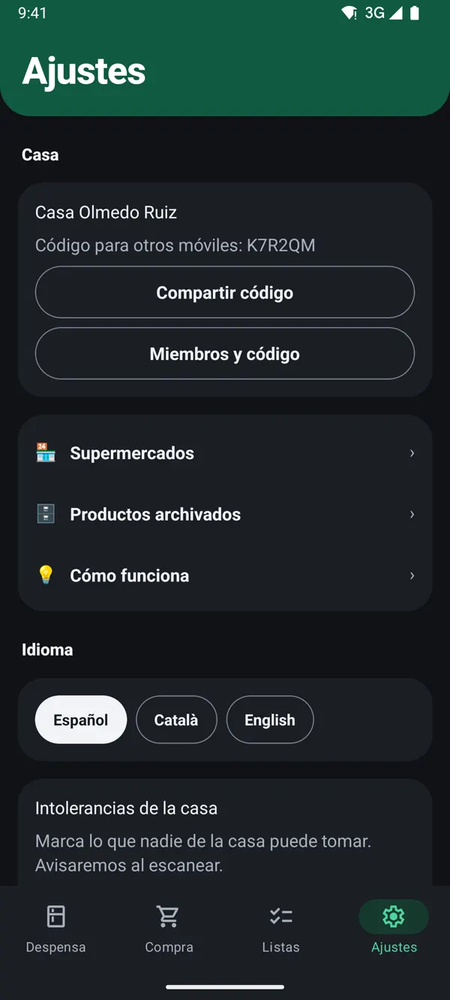
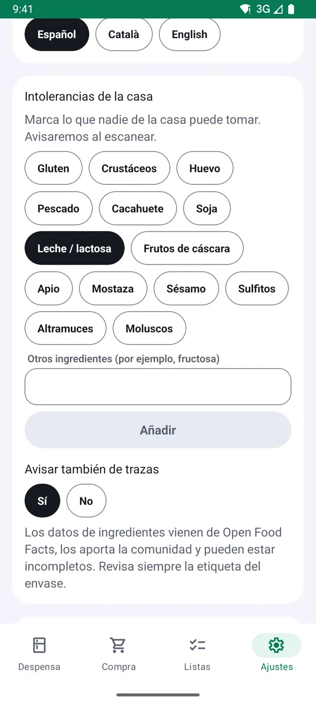
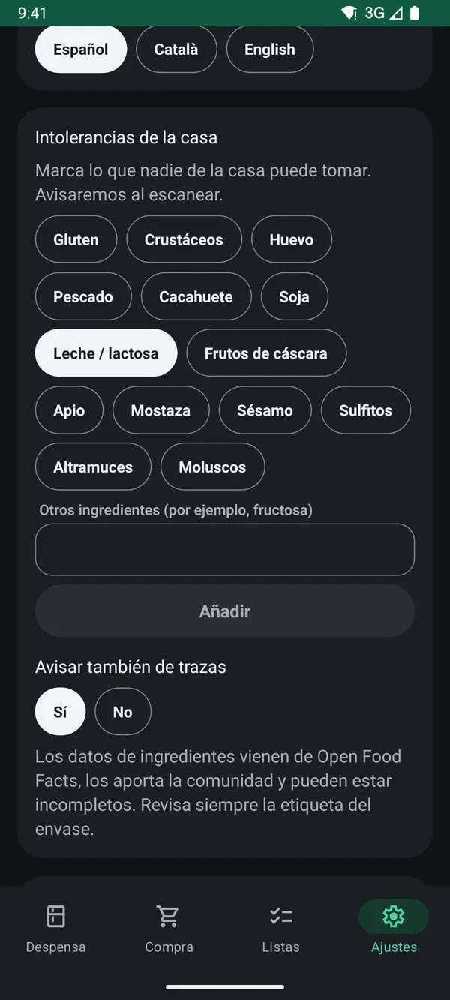

Lista de la compra compartida en familia: cómo hacerla
Actualizado el 13 de noviembre de 2026
En una casa donde compran varias personas pasan siempre las mismas cosas: dos paquetes de café porque los dos pensabais que faltaba, nadie se acuerda del detergente, y la lista está en la nevera justo cuando estás en el súper. Una lista de la compra compartida lo resuelve si cumple unas pocas reglas.
1Una sola lista para toda la casa
La regla básica es que haya una única lista y que todos la vean actualizada. Un papel en la nevera sirve mientras estás en casa; un grupo de mensajes se llena de conversación y lo importante se pierde. Lo que funciona es una lista en el móvil que se sincronice entre todos al momento.
Truco: en TuDespensa, cada móvil entra en la misma casa con su código. Lo tienes paso a paso en Compartir la despensa con tu familia.


2Apunta cuando se acaba, no cuando vas a comprar
Quien termina algo es quien mejor sabe que falta. Si apuntarlo es inmediato (un gesto, un escaneo), lo hará; si exige abrir una app y escribir, se olvidará. Cuanto más rápido sea apuntar, más completa estará la lista cuando alguien vaya a comprar.


3Marca lo que ya está en el carro
Si dos personas van a comprar a la vez, o una pasa por el súper de camino a casa, ir tachando en la lista compartida evita comprar lo mismo dos veces. Los demás ven al momento qué ya está cogido.


4Ordénala por supermercado y por pasillo
Casi todas las casas reparten la compra entre varias tiendas: lo fresco en el mercado, lo de marca en un súper y lo básico en otro. Separar la lista por supermercado y ordenar cada parte por pasillo hace la compra más rápida y evita volver atrás a por lo olvidado.
Truco: cómo hacerlo en la app: Hacer la compra por supermercado.


5Ten en cuenta alergias e intolerancias
Si alguien de casa no puede tomar lactosa o gluten, la lista compartida también debería recordarlo. Un aviso al escanear un producto con ese alérgeno evita errores cuando compra quien no está acostumbrado a revisar etiquetas.
Truco: en Ajustes → Intolerancias de la casa marcas lo que nadie puede tomar, y puedes pedir que avise también de trazas.


6Piso compartido: separa lo común de lo personal
En un piso de estudiantes o de compañeros, acordad qué es común (aceite, papel, limpieza) y qué compra cada uno. La lista compartida solo debería llevar lo común; así nadie paga ni compra de más.
TuDespensa es gratis y sin anuncios.
Llegará primero a Android y, más adelante, a iPhone. Las capturas son de la app con una casa de ejemplo.